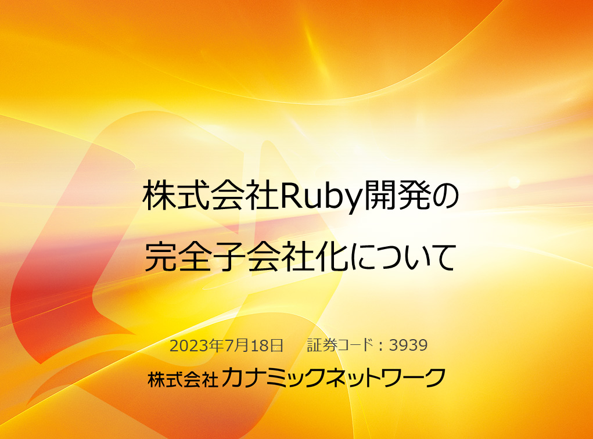
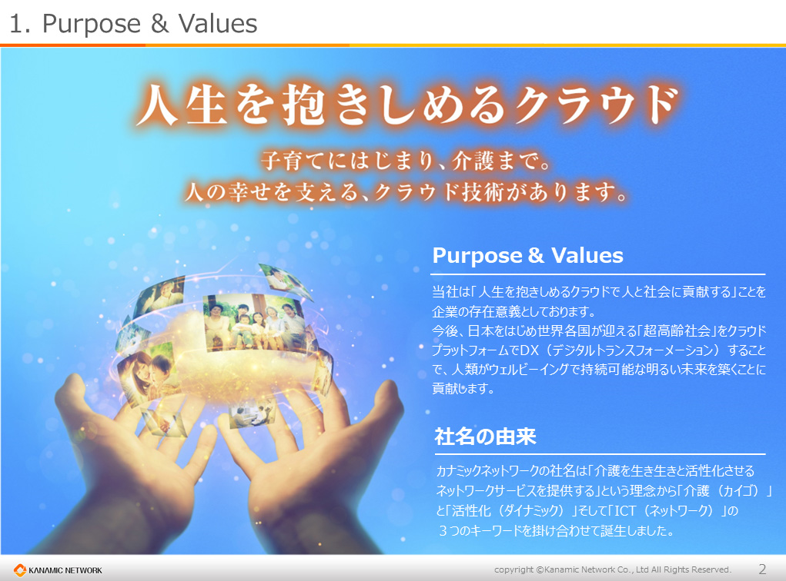
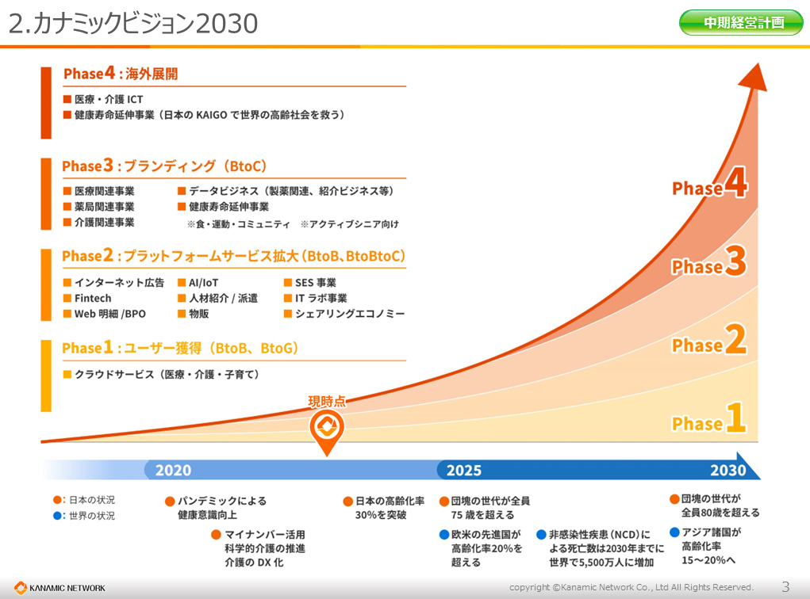
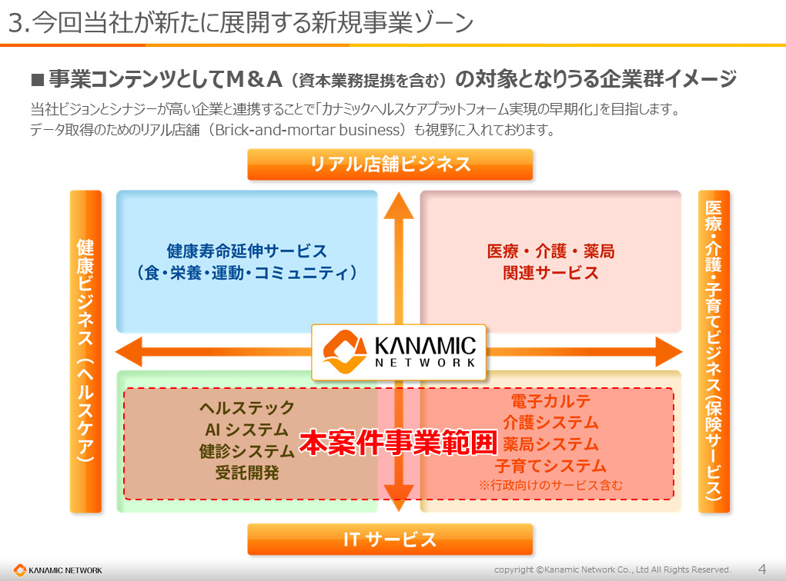
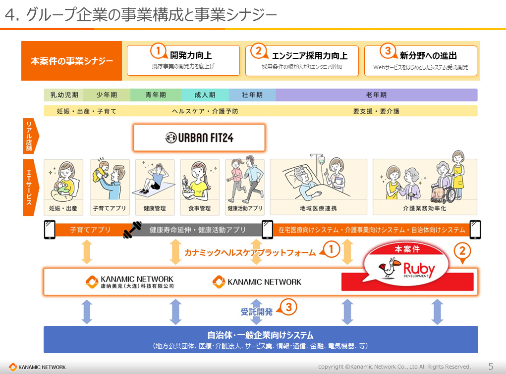
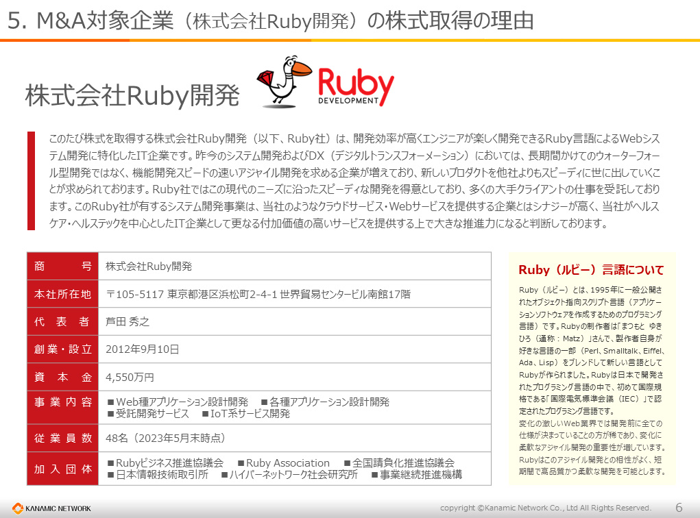
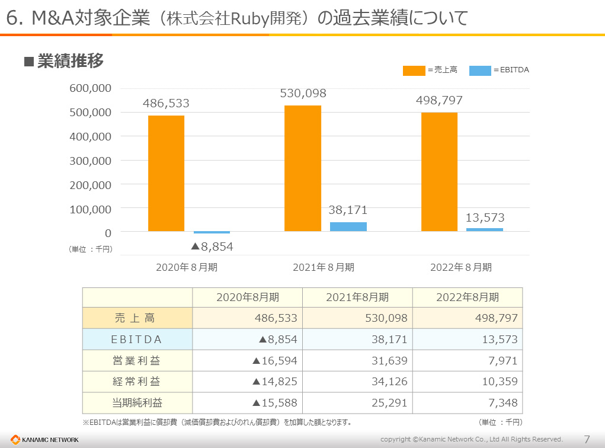
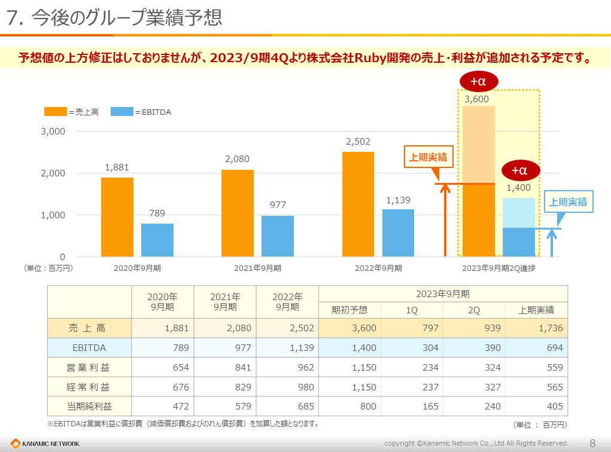

- 各位
- 2023年07月18日
会 社 名 株式会社カナミックネットワーク
代表者名 代表取締役社長 山本 拓真
(コード番号：3939 東証プライム市場)
株式会社Ｒｕｂｙ開発の株式取得（完全子会社化）に関するお知らせ
当社は、2023年7月18日開催の取締役会において、株式会社Ｒｕｂｙ開発（以下、「Ｒｕｂｙ社」）の株式を取得し当社の連結子会社とするため、株式譲渡契約を締結することを決議致しましたので、お知らせいたします。
記
１．株式取得の理由
当社グループは、医療・介護・子育て分野に特化したクラウドサービス、プラットフォームサービスを提供するヘルステック企業として、ITサービスの拡充、サービス品質・技術力の強化、顧客満足度の向上に継続的に努めておりますが、今後、更なる成長・発展を遂げるために、超高齢社会のヘルスケア分野と関連性の高い事業を推進し、新たな付加価値を創造していくことが必要であると認識しております。今後の成長戦略としましては、M＆Aを積極的に推進し、ヘルスケア分野から保険サービス分野、リアル店舗からITサービスまで、事業ポートフォリオの拡大等を掲げております。
このたび株式を取得するＲｕｂｙ社は、Ｒｕｂｙ言語によるシステム開発に特化したIT企業です。昨今のシステム開発およびDX（デジタルトランスフォーメーション）においては、長期間かけてのウォーターフォール型開発ではなく機能開発スピードの速いアジャイル開発を求める企業が増えており、新しいプロダクトを他社よりもスピーディに世に出していくことが求められております。Ｒｕｂｙ社では、この現代のニーズに沿ったスピーディな開発を得意としており、多くの大手クライアントの仕事を受託しております。
このＲｕｂｙ社が有するシステム開発事業は、当社のようなクラウドサービス・Webサービスを提供する企業とはシナジーが高いと判断しております。当社がヘルスケア・ヘルステックを中心としたIT企業として更なる付加価値の高いサービスを提供する上で大きな推進力になると判断しております。
当社では、『「人生を抱きしめるクラウド」で人と社会に貢献する』というビジョンを前提にした「事業コンテンツ」、「事業エリア」、「事業ツール」の補強・拡大を行う際の方法の一つとして、Ｍ＆Ａを積極的に推進しております。当社グループにおける新規事業の創出・既存事業の拡大とともに、Ｍ＆Ａの推進を通じてビジョンの実現と継続的な成長を図ってまいります。
２．株式取得の方法
当社は2023年８月４日にて、Ｒｕｂｙ社の発行済株式の全てを取得し、当社の連結子会社といたします。
Ｒｕｂｙ社株式譲受代金は金銭にて支払いを行い、当該金銭は全額当社の自己資金を充当いたします。
３．子会社となる会社の概要
４．株式取得先の概要
住所：東京都港区
５．取得株式数、取得価格及び取得前後の所有株式の状況
アドバイザリー費用等（概算額） 31,500千円
合計（概算額） 481,500千円
※取得価額については、公平性・妥当性を確保するため、第三者算定機関による株式価値の算定結果を勘案し決定しております
※取得価額につきましては、株式取得の相手方との秘密保持契約に基づき非開示とさせて頂きますが、その公平性と妥当性を期すため、独立した第三者が算定した評価額を基に、譲渡先と合意のうえ、決定しております。
※「３．子会社となる会社の概要」に記載の通り、本開示時点の上記株式保有者は芦田秀之氏75％（177株）、㈱フルスピード25％（59株）となっております。㈱フルスピードが保有する59株は、「６．今後の日程（予定）」記載の株式譲渡契約締結締結日までに㈱フルスピードから芦田秀之氏が譲り受けるべく両者間で交渉を行っており、当社は今後、芦田秀之氏が㈱フルスピードから譲り受ける予定の株式を含む236株を譲渡対象としております。
６．今後の日程（予定）
７．今後の見通し
本件株式取得による当期の連結業績に与える影響は軽微であると見込んでおりますが、中長期的に当社グループの業績向上に大きく資するものと考えております。なお、今後公表すべき事項が生じた場合は速やかにお知らせいたします。
以 上
本件に関するお問い合わせ先
株式会社カナミックネットワーク 管理部
所在地 〒150-6031 東京都渋谷区恵比寿4-20-3 恵比寿ガーデンプレイスタワー31階
ＴＥＬ 03-5798-3955
ＦＡＸ 03-5798-3951
問合せフォーム https://www.kanamic.net/form/request/input.jsp







